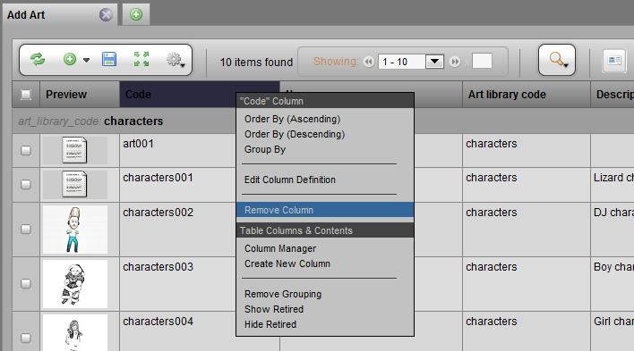
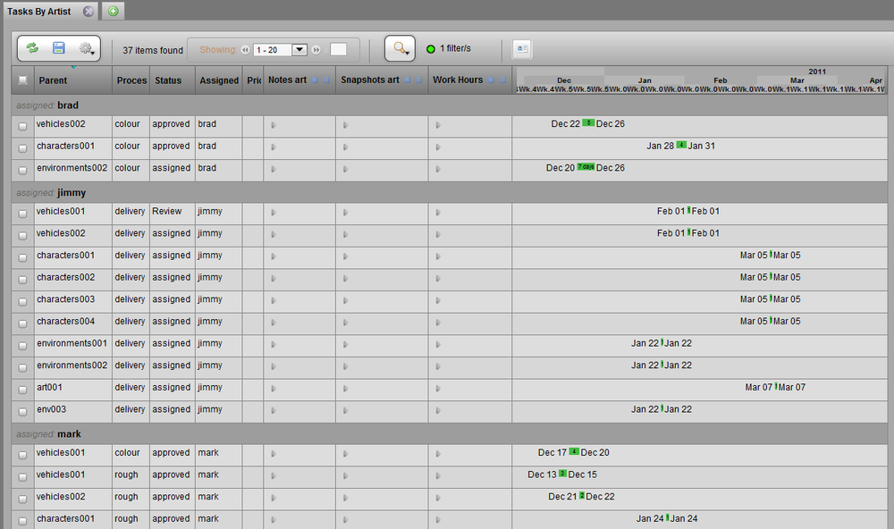
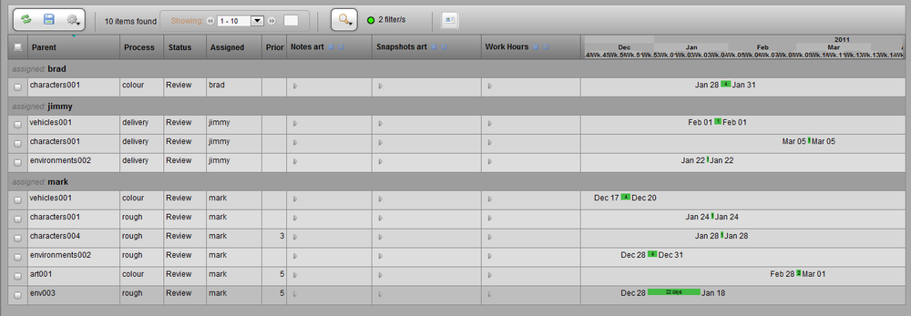

TACTIC provides the following configuration display options when creating or editing a view:
-
Which columns are part of the view
-
The order of the columns
-
The width of each column
-
The Grouping of the items
-
The Search which has been applied to the view
In TACTIC, there are 2 main distinctions between the types of views Project Views and My Views. These are presented in 2 sections within the main sidebar.
-
Project Views - Project views are presented to all users in the production and/or can be hidden based on group access rules. Project views are also generally only created by the project manager and the ability to save and modify them can also be blocked with group access rules.
-
My Views - My views are views saved per user. It allows for saving of personal views outside of the project views. These will only be available to the user who created them.
Adding Columns
To add a column, right-click on any column header in the view.

Select the Column Manager
In the column manager, selecting columns will add them to them current view. The sections in the column manager are as follows:
-
Custom Widgets - These are the custom widgets which have been defined for the current type. These represent both changes to information (i.e.. switching a code) as well as tools which represent certain actions for that type (i.e.. a button which loads the asset into an application)
-
Common Widgets - These widgets are similar to the ones above but, are common to all types in TACTIC. They are tools which are generally universal.
-
Raw Database Columns - These are the raw data (property) columns which exist for the type. Generally, each is represented by a Property Column but, this allows adding of the data in its raw format. For example, a task has 'start_date' and 'end_date' database columns but, there may be a 'schedule' column which displays the start_date and end_date together in a calendar widget.
Note
Certain widgets require Java to be started up so, it can take a few seconds for the selected column to actually appear in the view. When finished, click the close button.
Removing Columns
To remove a column from the current view, left click in the column header for the column to be removed and choose Remove Column. Columns can also be removed through deselecting them in the column manager.

Ordering Columns
To re-order columns, click and drag a column in the header to the desired location in the view. As the column header is dragged to the left or the right, an orange bar will appear between the columns indicating where the column appear if the mouse button is released.

Resize Columns
To resize a column width, hover the pointer over the divider between the column headers and the mouse pointer will change to a width adjuster.
Left click and drag the width adjuster to change the width of the column.

Grouping
Some columns in TACTIC contain categorical data. Some examples include 'status', 'parent', 'assigned user' columns. These columns can be grouped.
For example, grouping by the Assigned User column displays the items in groups by each user.

To apply grouping to a view, left click on the column header to be grouped and choose Group By

Search
The Search Tool is used as a filter to only display items which match a certain criteria. This allows the results in the view to be narrowed down. When a view is saved, the search criteria is saved with the view which causes the view to become a live report as each time the view is loaded the search filter will be applied to the live data.
For example, if a search filter is created which shows only items which have a child task with the status "Review", the view will provide a report of all items which need to be reviewed. When the status of these tasks are changed, the items will be filtered out and no longer appear in the view.


Saving the View
After the display of the view have been configured, to save the view, go to the gear menu under View. The options are described below.

-
Save Current View - Saves over the existing view. (Available only to users with access to save project views. Otherwise, it will save a new My View)
-
Save As New "My View" - Saves the view to the user's personal My Views. (Available only to users who can create views)
-
Save As New "Project View" - Save a new project view which will be available to all users. (Available only to users with the appropriate access.)
-
Edit Current View - Opens up a pop-up window to edit the table and the columns.